| employee | gender | js_score |
|---|---|---|
| 1 | female | 5.057311 |
| 2 | male | 6.642440 |
| 3 | male | 6.119694 |
| 4 | female | 9.482198 |
| 5 | female | 8.883347 |
| 6 | female | 7.015606 |
| 7 | male | 4.633738 |
| 8 | female | 7.919998 |
| 9 | male | 9.028004 |
| 10 | female | 5.860449 |
| 11 | male | 10.000000 |
| 12 | male | 3.617721 |
| 13 | male | 6.948510 |
| 14 | male | 7.429012 |
| 15 | female | 7.292992 |
| 16 | male | 7.765043 |
| 17 | male | 6.380634 |
| 18 | male | 5.962925 |
| 19 | male | 5.607226 |
| 20 | female | 4.635931 |
STA1005 - Quantitative Research Methods
Lecture 5: Categories in the General Linear Model
Damien Dupré | DCU Business School
Previous in STA1005
Vocabulary
“Linear Model”, “Linear Regression”, “Multiple Regression” or simply “Regression” are all referring to the same model: The General Linear Model.
It contains:
- 1 continuous Outcome/Dependent Variable
- 1 or + categorical or continuous Predictor/Independent Variables
- Made of Main and/or Interaction Effects
\[Y = b_{0} + b_{1}\,Predictor\,1 + b_{2}\,Predictor\,2+ ... + b_{n}\,Predictor\,n + e\]
A Linear Regression is used to test all the hypotheses at once and to calculate the predictors’ estimate.
Vocabulary
Specific tests are available for certain type of hypothesis such as T-test or ANOVA but as they are special cases of Linear Regressions, their importance is limited (see Jonas Kristoffer Lindeløv’s blog post: Common statistical tests are linear models).

Analysis of the Estimate
Once the best line is found, each estimate of the tested equation is calculated by a software (i.e., \(b_0, b_1, ..., b_n\)).
- \(b_0\) is the intercept and has no interest for hypothesis testing
- \(b_1, ..., b_n\):
- are predictors’ effect estimate and each of them is used to test an hypothesis
- are the value of the slope of the best line between each predictor and the outcome
- indicates how many units of the outcome variable increases/decreases/changes when the predictor increases by 1 unit
Analysis of the Estimate
- If \(b_1, ..., b_n = 0\), then:
- The regression line is horizontal (no slope)
- When the Predictor increases by 1 unit, the Outcome variable does not change
- The null alternative hypothesis is not rejected
- If \(b_1, ..., b_n > 0\) or \(< 0\), then:
- The regression line is positive or negative
- When the Predictor increases by 1 unit, the Outcome variable increases or decreases by \(b\)
- The null alternative hypothesis is rejected and the alternative hypothesis considered as plausible
Significance of Effect’s Estimate
The statistical significance of an effect estimate depends on the strength of the relationship and on the sample size:
- An estimate of \(b_1 = 0.02\) can be very small but still significantly different from \(b_1 = 0\)
- Whereas an estimate of \(b_1 = 0.35\) can be stronger but in fact not significantly different from \(b_1 = 0\)
Significance of Effect’s Estimate
The significance is the probability to obtain your results with your sample in the null hypothesis scenario:
- Also called \(p\)-value
- Is between 0% and 100% which corresponds to a value between 0.0 and 1.0
If the \(p\)-value is lower to 5% or 0.05, then the probability to obtain your results in the null hypothesis scenario is low enough to say that the null hypothesis scenario is rejected and there must be a link between the variables.
Remember that the \(p\)-value is the probability of the data given the null hypothesis: \(P(data|H_0)\).
1. Hypotheses with Categorical Predictors having 2 Categories
Hypotheses with Categorical Predictors
We will have a deep dive in the processing of Categorical predictor variables with linear regressions:
- How to analyse a predictor with only 2 categories?
- How to analyse a predictor with more than 2 categories?

Example of Categorical Coding
Imagine we sample male and female employees to see if the difference between their job satisfaction averages is due to sampling luck or is reflecting a real difference in the population.
That is, is the difference between male and female employees statistically significant?
Example of Categorical Coding
Using a Categorical variable having 2 category, e.g., comparing female vs. male …
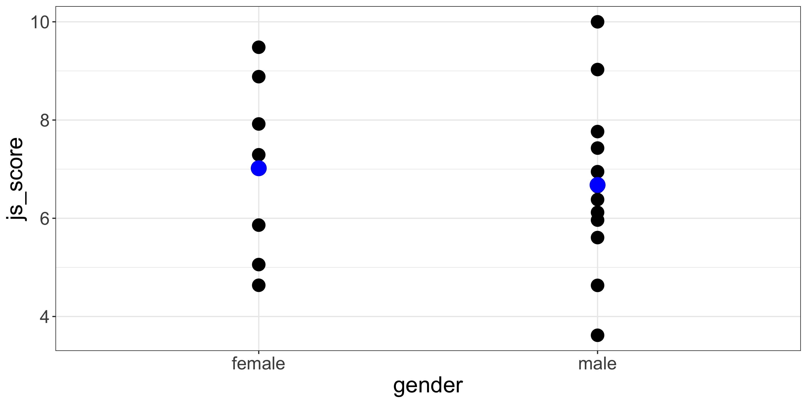
… is the same as comparing female coded 1 and male coded 2
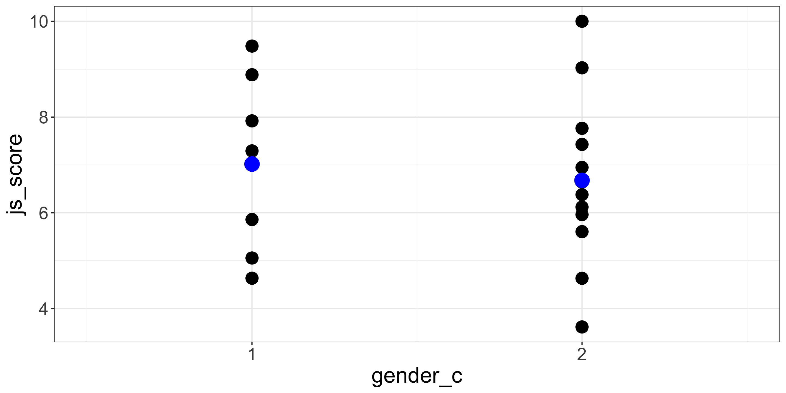
Example of Categorical Coding
By default, Categorical variables are coded using the alphabetical order (e.g., here Female first then Male) using 1, 2, 3 and so on.
However, you can recode the variable yourself with your own order by creating a new variable using IF statement (e.g., IF(gender == "female", 2, 1) in Jamovi)
Categorical Coding in Linear Regression
Default
Female = 1 and Male = 2
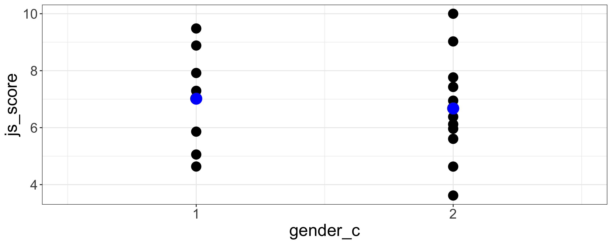
| term | estimate | std.error | statistic | p.value |
|---|---|---|---|---|
| (Intercept) | 7.36 | 1.34 | 5.50 | <0.001 |
| gender_c | -0.34 | 0.80 | -0.43 | 0.675 |
Manual
Male = 1 and Female = 2
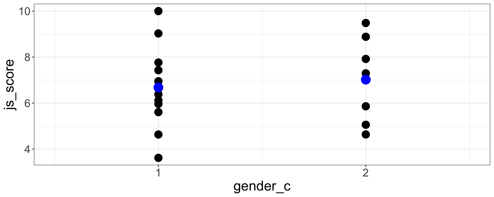
| term | estimate | std.error | statistic | p.value |
|---|---|---|---|---|
| (Intercept) | 6.34 | 1.19 | 5.34 | <0.001 |
| gender_c | 0.34 | 0.80 | 0.43 | 0.675 |
Categorical Predictor with 2 Categories
Let’s use another example with the organisation_beta.csv file
Variable transformation
Instead of using \(salary\) as a continuous variable, let’s convert it as \(salary\_c\) which is a categorical variable:
- Everything higher than or equal to salary average is labelled “high” salary
- Everything lower than salary average is labelled “low” salary
Categorical Predictor with 2 Categories
Hypothesis
The \(js\_score\) of employees having a high \(salary\_c\) is different than the \(js\_score\) of employees having a low \(salary\_c\)
In mathematical terms
\[H_a: \mu(js\_score)_{high\,salary} \neq \mu(js\_score)_{low\,salary}\] \[H_0: \mu(js\_score)_{high\,salary} = \mu(js\_score)_{low\,salary}\]
Categorical Predictor with 2 Categories
An hypothesis of differences between two groups is easily tested with a Linear Regression:
- If \(\mu_{1} \neq \mu_{2}\), the slope of the line between these averages is not null (i.e., \(b_{1} \neq 0\))
- If \(\mu_{1} = \mu_{2}\), the slope of the line between these averages is null (i.e., \(b_{1} = 0\))
Categorical Predictor with 2 Categories
Comparing the difference between two averages is the same as comparing the slope of the line crossing these two averages:
- If two averages are not equal, then the slope of the line crossing these two averages is not 0
- If two averages are equal, then the slope of the line crossing these two averages is 0
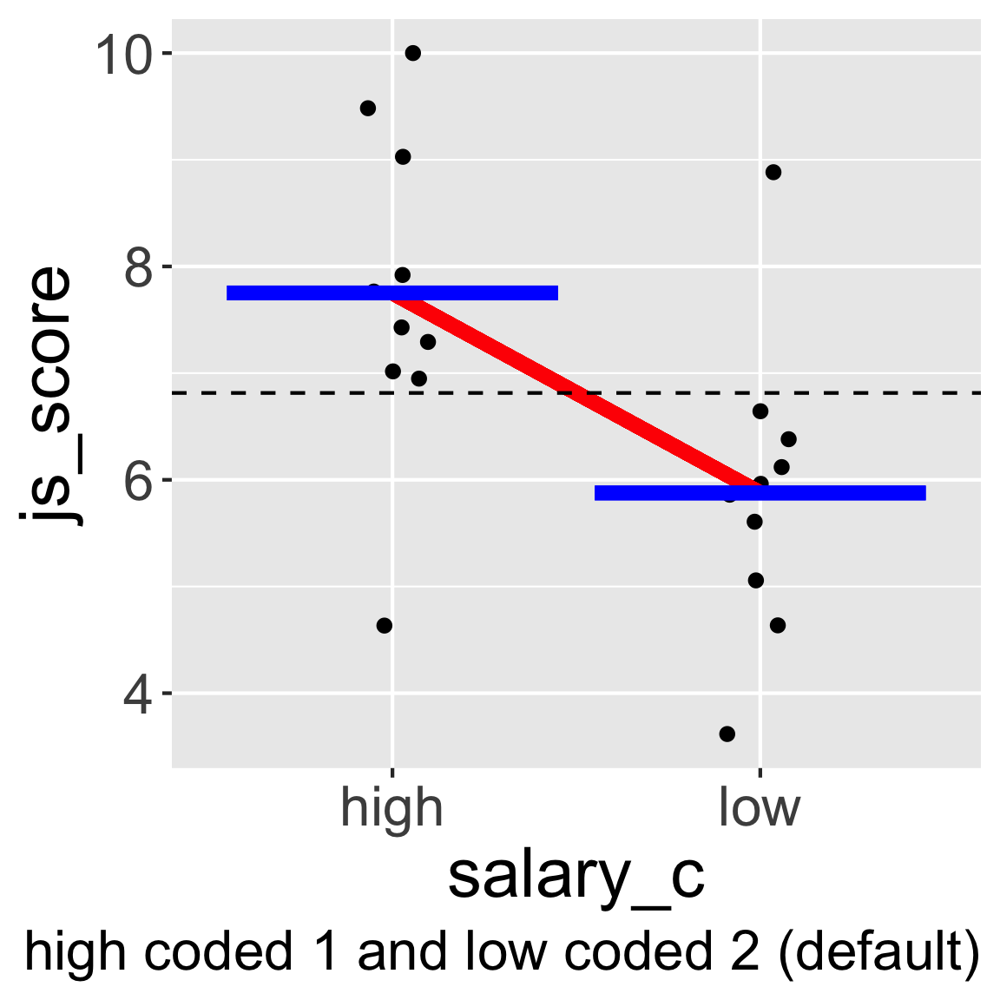
Categorical Predictor with 2 Categories
Warning
JAMOVI and other software automatically code categorical variable following alphabetical order but sometimes you need to change these codes.
For example, here low coded with the value 1 and high coded with the value 2 would make more sense.
The way how categorical variables are coded will influence the sign of the estimate (positive vs. negative)
But it doesn’t change the value of the statistical test nor the \(p\)-value obtained
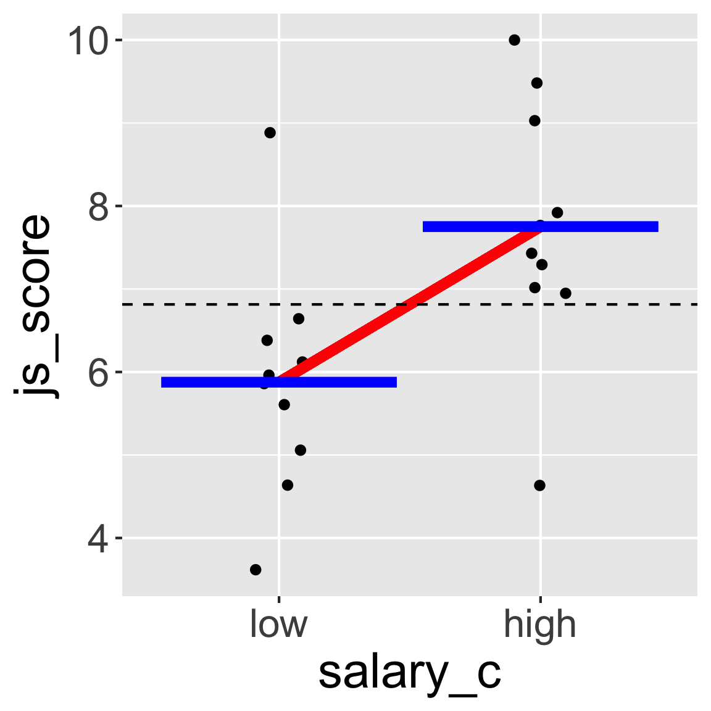
Categorical Predictor with 2 Categories
To test the influence of a categorical predictor variable either nominal or ordinal having two categories (e.g., high vs. low, male vs. female, France vs. Ireland), it is possible to test if the \(b\) associated to this predictor is significantly higher, lower, or different from 0.
\[js\_score = b_{0} + b_{1}\,salary\_c + e\]
Categorical Predictor with 2 Categories
Exactly the same template as for Continuous Predictors:
The predictions provided by the alternative model are significantly better than those provided by null model (\(R^2 = .31\), \(F(1, 18) = 8.27\), \(p = .010\)).
The effect of \(salary\_c\) on \(js\_score\) is statistically significant, therefore \(H_0\) can be rejected (\(b = 1.87\), 95% CI \([0.50, 3.24]\), \(t(18) = 2.88\), \(p = .010\)).
Testing Main Effects with Categorical Predictors
Testing Categorical Predictors
In JAMOVI
- Open your file
- Set variables in their correct type
- Analyses > Regression > Linear Regression
- Set \(js\_score\) as DV and \(salary\_c\) as Factors (i.e., Cat. Predictor)

Testing Categorical Predictors
Model
The prediction provided by the model with all predictors is significantly better than a model without predictors (\(R^2 = .31\), \(F(1, 18) = 8.27\), \(p = .010\)).
Testing Categorical Predictors
Hypothesis with Default Coding (high = 1 vs. low = 2)
The effect of \(salary\_c\) on \(js\_score\) is statistically significant, therefore \(H_{0}\) can be rejected (\(b = -1.87\), 95% CI \([-3.24, -0.50]\), \(t(18) = -2.88\), \(p = .010\)).
Hypothesis with Manual Coding (low = 1 vs. high = 2)
The effect of \(salary\_c\) on \(js\_score\) is statistically significant, therefore \(H_{0}\) can be rejected (\(b = 1.87\), 95% CI \([0.50, 3.24]\), \(t(18) = 2.88\), \(p = .010\)).
Coding of Categorical Predictors
Choosing 1 and 2 are just arbitrary numerical values but any other possibility will produce the same \(p\)-value
However, choosing codes separated by 1 is handy because it’s easily interpretable, the estimate corresponds to the change from one category to another:
The \(js\_score\) of “high” \(salary\_c\) employees is 1.87 higher than the \(js\_score\) of “low” \(salary\_c\) employees (when “low” is coded 1 and “high” coded 2).
Coding of Categorical Predictors
Special case called Dummy Coding when a category is coded 0 and the other 1:
- Then the intercept, value of \(js\_score\) when salary is 0 corresponds to the category coded 0
- The test of the intercept is the test of the average for the category coded 0 against an average of 0
- Is called simple effect
Coding of Categorical Predictors
Special case called Deviation Coding when a category is coded 1 and the other -1:
- Then the intercept, corresponds to the average between the two categories
- The test of the intercept is the test of the average for the variable
- However, the distance between 1 and -1 is 2 units so the estimate is not as easy to interpret, therefore it is possible to choose categories coded 0.5 vs. -0.5 instead
Dummy Coding in Linear Regression
Dummy Coding is when a category is coded 0 and the other coded 1.
For example, in JAMOVI recode female as 0 and male as 1 (Dummy Coding): IF(gender == "female", 0, 1)
Dummy Coding is useful because one of the category becomes the intercept and is tested against 0.
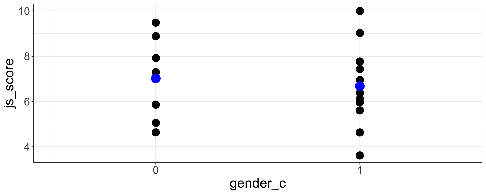
| term | estimate | std.error | statistic | p.value |
|---|---|---|---|---|
| (Intercept) | 7.02 | 0.62 | 11.33 | <0.001 |
| gender_c | -0.34 | 0.80 | -0.43 | 0.675 |
Deviation Coding in Linear Regression
Deviation Coding is when the intercept is situated between the codes of the categories.
For example, in JAMOVI recode female as -1 and male as 1 (Deviation Coding): IF(gender == "female", -1, 1)
Deviation Coding is useful because the average of the categories becomes the intercept and is tested against 0.
Deviation Coding in Linear Regression
However, in the Deviation Coding using -1 vs. +1, the distance between the categories is 2 not 1. Therefore, even if the test of the slop is the exact same, the value of the slop (the estimate) is twice lower.
Consequently it is possible to use a Deviation Coding with -0.5 vs. +0.5 to keep the distance of 1 between the categories.
For example, in JAMOVI recode female as -0.5 and male as 0.5 (Deviation Coding): IF(gender == "female", -0.5, 0.5)
Deviation Coding in Linear Regression
Female = -1 and Male = 1
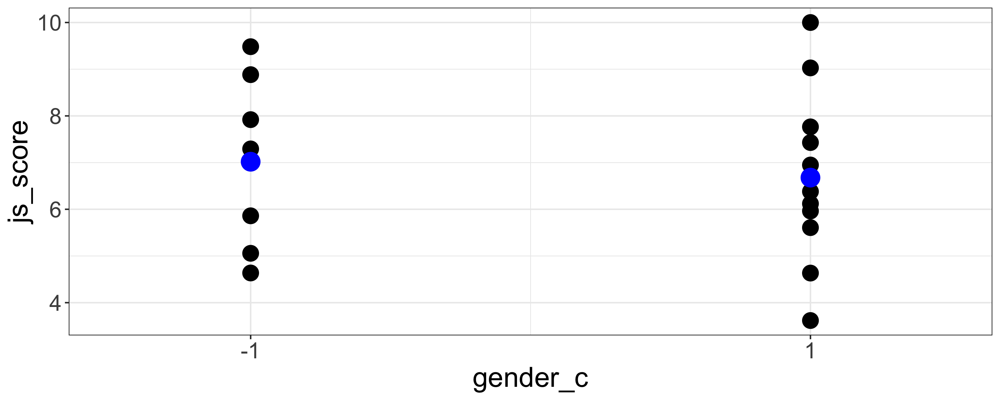
| term | estimate | std.error | statistic | p.value |
|---|---|---|---|---|
| (Intercept) | 6.85 | 0.4 | 17.12 | <0.001 |
| gender_c | -0.17 | 0.4 | -0.43 | 0.675 |
Female = -0.5 and Male = 0.5
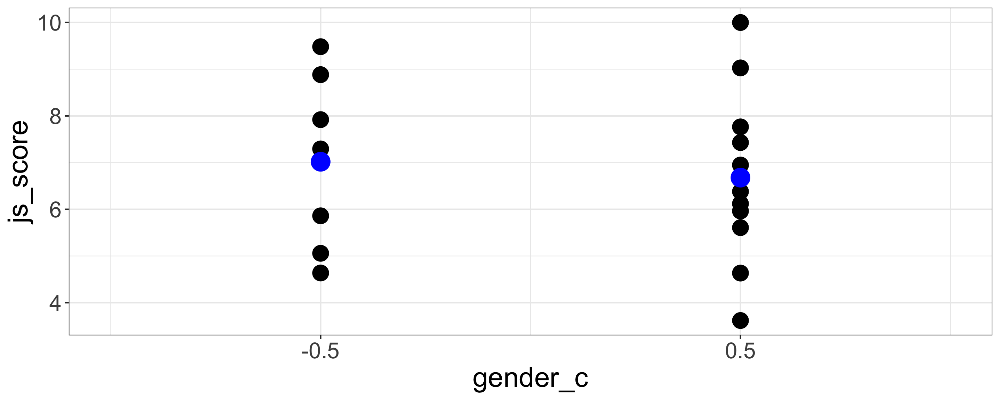
| term | estimate | std.error | statistic | p.value |
|---|---|---|---|---|
| (Intercept) | 6.85 | 0.4 | 17.12 | <0.001 |
| gender_c | -0.34 | 0.8 | -0.43 | 0.675 |
Testing Interaction Effects with Categorical Predictors
Interaction with Categorical Predictors
In JAMOVI
- Open your file
- Set variables according their type
- Analyses > Regression > Linear Regression
- Set \(js\_score\) as DV and \(salary\_c\) as well as \(gender\) as Factors
- In the Model Builder option:
- Select both \(salary\_c\) and \(gender\) to bring them in the Factors at once
Interaction with Categorical Predictors
Model Tested
\[js\_score = b_{0} + b_{1}\,salary\_c + b_{2}\,gender + b_{3}\,salary\_c*gender + e\]
Note: The test of the interaction effect corresponds to the test of a variable resulting from the multiplication between the codes of \(salary\_c\) and the codes of \(gender\).
Interaction with Categorical Predictors

Live Demo
️ Your Turn!
With the organisation_beta.csv data, test the following models and conclude on each effect:
Model 1: \(js\_score = b_{0} + b_{1}\,perf + b_{2}\,gender + b_{3}\,perf*gender + e\)
Model 2: \(js\_score = b_{0} + b_{1}\,perf + b_{2}\,location + b_{3}\,perf*location+ e\)
10:00
2. Hypotheses with Categorical Predictor having 3+ Categories
Categorical Predictor with 3+ Categories
I would like to test the effect of the variable \(location\) which has 3 categories: “Ireland”, “France” and “Australia”.

In the Model Coefficient Table, to test the estimate of \(location\), there is not 1 result for \(location\) but 2!
- Comparison of “Australia” vs. “France”
- Comparison of “Australia” vs. “Ireland”
Why multiple \(p\)-value are provided for the same predictor?
Coding Predictors with 3+ categories
Variables
- Outcome = \(js\_score\) (from 0 to 10)
- Predictor = \(location\) (3 categories: Australia, France and Ireland)
| employee | location | js_score |
|---|---|---|
| 1 | France | 5.057311 |
| 2 | Australia | 6.642440 |
| 3 | France | 6.119694 |
| 4 | Ireland | 9.482198 |
| 5 | France | 8.883347 |
| 6 | Australia | 7.015606 |
| 7 | France | 4.633738 |
| 8 | Ireland | 7.919998 |
| 9 | Australia | 9.028004 |
| 10 | Australia | 5.860449 |
| 11 | Ireland | 10.000000 |
| 12 | Australia | 3.617721 |
| 13 | France | 6.948510 |
| 14 | Ireland | 7.429012 |
| 15 | Australia | 7.292992 |
| 16 | Ireland | 7.765043 |
| 17 | Ireland | 6.380634 |
| 18 | France | 5.962925 |
| 19 | Australia | 5.607226 |
| 20 | Australia | 4.635931 |
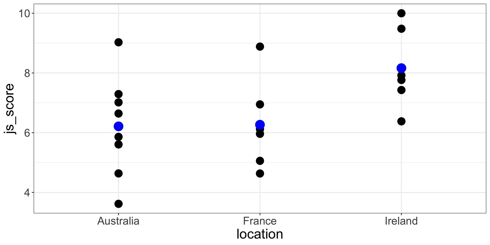
Coding Predictors with 3+ categories
\(t\)-test can only compare 2 categories. Because Linear Regression Models are (kind of) \(t\)-test, categories will be compared 2-by-2 with one category as the reference to compare all the others.
Coding Predictors with 3+ categories
For example a linear regression of \(location\) on \(js\_score\) will display not one effect for the \(location\) but the effect of the 2-by-2 comparison using a reference group by alphabetical order:
| term | estimate | std.error | statistic | p.value |
|---|---|---|---|---|
| (Intercept) | 6.21 | 0.54 | 11.42 | <0.001 |
| locationFrance | 0.06 | 0.83 | 0.07 | 0.948 |
| locationIreland | 1.95 | 0.83 | 2.35 | 0.031 |
In our case the reference is the group “Australia” (first letter).
Here is our problem: How to test the overall effect of a variable with 3 or more Categories?
ANOVA Test for Overall Effects
Beside Linear Regression and \(t\)-test, researchers are using ANOVA a lot. ANOVA, stands for Analysis of Variance and is also a sub category of Linear Regression Models.
ANOVA is used to calculate the overall effect of categorical variable having more that 2 categories as \(t\)-test cannot cope. In the case of testing 1 categorical variable, a “one-way” ANOVA is performed.
How ANOVA is working?
ANOVA Test for Overall Effects
In real words:
- \(H_a\): at least one group is different from the others
- \(H_0\): all the groups are the same
In mathematical terms:
- \(H_a\): it is not true that \(\mu_{1} = \mu_{2} = \mu_{3}\)
- \(H_0\): it is true that \(\mu_{1} = \mu_{2} = \mu_{3}\)
ANOVA Test for Overall Effects
I won’t go too much in the details but to check if at least one group is different from the others, the distance of each value to the overall mean (Between−group variation) is compared to the distance of each value to their group mean (Within−group variation).
If the Between−group variation is the same as the Within−group variation, all the groups are the same.

ANOVA in our Example
An hypothesis for a categorical predictor with 3 or more categories predicts that at least one group among the 3 groups will have an average significantly different than the other averages.
Hypothesis Formulation
The \(js\_score\) of employees working in at least one specific \(location\) will be significantly different than the \(js\_score\) of employees working in the other \(location\).
ANOVA in our Example
In mathematical terms
- \(H_0\): it is true that \(\mu(js\_score)_{Ireland} = \mu(js\_score)_{France} = \mu(js\_score)_{Australia}\)
- \(H_a\): it is not true that \(\mu(js\_score)_{Ireland} = \mu(js\_score)_{France} = \mu(js\_score)_{Australia}\)
This analysis is usually preformed using a one-way ANOVA but as ANOVA are special cases of the General Linear Model, let’s keep this approach.
ANOVA in our Example
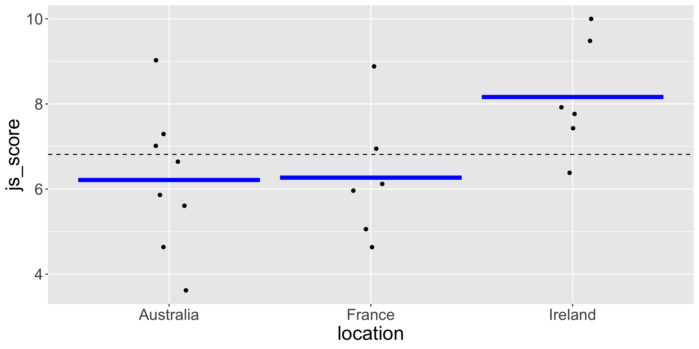
ANOVA in our Example
In JAMOVI
- Open your file
- Set variables according their type
- Analyses > Regression > Linear Regression
- Set \(js\_score\) as DV and \(location\) as Factors
- In the Model Coefficients option:
- Select Omnibus Test ANOVA test
ANOVA in our Example

Results
There is no significant effect of employee’s \(location\) on their average \(js\_score\) ( \(F(2, 17) = 3.30\), \(p = .062\))
Live Demo
️ Your Turn!
Using the organisation_beta.csv file, test the following models and conclude on the hypothesis related to each estimate:
Model 1: \(js\_score = b_{0} + b_{1}\,salary + b_{2}\,location + b_{3}\,perf + e\)
Model 2: \[js\_score = b_{0} + b_{1}\,salary + b_{2}\,location + b_{3}\,perf + b_{4}\,salary*location +\] \[b_{5}\,perf*location + b_{6}\,perf*salary + b_{7}\,salary*location*perf + e\]
05:00
3. Manipulating Contrast with Categorical Predictors
Post-hoc Tests
Imagine you want to test the specific difference between France and Ireland, how to obtain a test of specific categories when using a categorical variable with 3 or more categories?
Post-hoc Tests
The “Post-hoc” runs a separate \(t\)-test for all the pairwise category comparison:
| location1 | sep | location2 | md | se | df | t | ptukey |
|---|---|---|---|---|---|---|---|
| Australia | - | France | -0.06 | 0.83 | 17 | -0.07 | 1.00 |
| Australia | - | Ireland | -1.95 | 0.83 | 17 | -2.35 | 0.08 |
| France | - | Ireland | -1.90 | 0.89 | 17 | -2.13 | 0.11 |
Even if it looks useful, “Post-hoc” test can be considered as \(p\)-Hacking because there is no specific hypothesis testing, everything is compared.
Corrections for multiple tests are available (i.e., Tukey, Scheffe, Bonferroni or Holm) but they are not good practice.
Contrasts or Factorial ANOVA
By using specific codes for the categories (also called contrasts), it is possible to test more precise hypotheses.
Actually, you are mastering Contrasts already. When a recoding is done on a variable with 2 categories (like Dummy Coding or Deviation Coding), a contrast is applied.
Contrasts or Factorial ANOVA
When a recoding is used on more than 2 categories, three rules have to be applied:
- Rule 1: Categories with the same code are tested together
Coding Ireland 1, France 1 and Australia 2 compares Ireland and France versus Australia
Contrasts or Factorial ANOVA
When a recoding is used on more than 2 categories, three rules have to be applied:
- Rule 2: The number of contrast possible is the number of categories - 1
\(location\) has 3 categories so 2 contrast comparisons can be performed
Contrasts or Factorial ANOVA
When a recoding is used on more than 2 categories, three rules have to be applied:
- Rule 3: The value 0 means the category is not taken into account
Coding Ireland 1, France 0 and Australia 2 compares Ireland versus Australia
Sum to Zero Contrasts
Also called “Simple” contrast, each contrast encodes the difference between one of the groups and a baseline category, which in this case corresponds to the first group:
| Predictor's categories | Contrast1 | Contrast2 |
|---|---|---|
| Placebo | -1 | -1 |
| Vaccine 1 | 1 | 0 |
| Vaccine 2 | 0 | 1 |
Sum to Zero Contrasts
In this example:
- Contrast 1 compares Placebo with Vaccine 1
- Contrast 2 compares Placebo with Vaccine 2
However I won’t be able to compare Vaccine 1 and Vaccine 2
Polynomial Contrasts
They are the most powerful of all the contrasts to test linear and non linear effects: Contrast 1 is called Linear, Contrast 2 is Quadratic, Contrast 3 is Cubic, Contrast 4 is Quartic …
| Predictor's categories | Contrast_1 | Contrast_2 |
|---|---|---|
| Low | -1 | 1 |
| Medium | 0 | -2 |
| High | 1 | 1 |
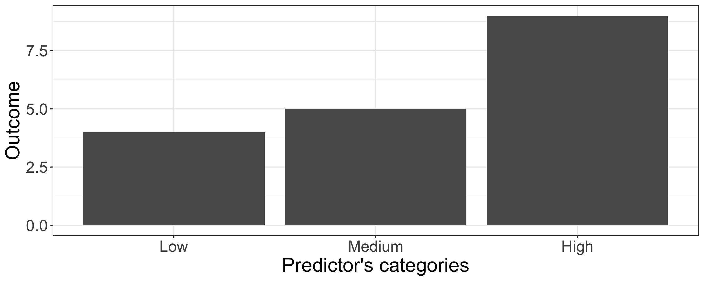
Polynomial Contrasts
In this example:
- Contrast 1 checks the linear increase between Low, Medium, High
- Contrast 2 checks the quadratic change between Low, Medium, High
If the hypothesis specified a linear increase, we would expect Contrast 1 to be significant but Contrast 2 to be non-significant
Live Demo
Comparison of Contrasts Results
What happens with different contrast to compare the average \(js\_score\) according employee’s \(location\): France, Ireland, Australia?
Comparison of Contrasts Results
Sum to Zero Contrasts
| category | sum_c1 | sum_c2 |
|---|---|---|
| France | -1 | -1 |
| Ireland | 1 | 0 |
| Australia | 0 | 1 |
| term | estimate | std.error | statistic | p.value |
|---|---|---|---|---|
| (Intercept) | 6.88 | 0.35 | 19.82 | <0.001 |
| sum_c1 | 1.28 | 0.50 | 2.55 | 0.021 |
| sum_c2 | -0.67 | 0.47 | -1.43 | 0.171 |
Polynomial Contrasts
| category | poly_c1 | poly_c2 |
|---|---|---|
| France | -1 | 1 |
| Ireland | 0 | -2 |
| Australia | 1 | 1 |
| term | estimate | std.error | statistic | p.value |
|---|---|---|---|---|
| (Intercept) | 6.88 | 0.35 | 19.82 | <0.001 |
| poly_c1 | -0.03 | 0.42 | -0.07 | 0.948 |
| poly_c2 | -0.64 | 0.25 | -2.55 | 0.021 |
️ Your Turn!
Using the
organisation_beta.csvfile, create contrast variables to reproduce the results obtained with Sum to Zero ContrastsWhen it’s done, explicit the hypotheses tested, the representation of the models and their corresponding equation
10:00
Solution - Sum to Zero Contrasts
Variables:
- Outcome = \(js\_score\) (from 0 to 10)
- Predictor 1 = \(sum\_c1\) (Ireland vs France)
- Predictor 2 = \(sum\_c2\) (Australia vs France)
Solution - Sum to Zero Contrasts
Hypotheses:
- \(H_{a_1}\): The average \(js\_score\) of Irish employees is different than the average \(js\_score\) of French employees
- \(H_{0_1}\): The average \(js\_score\) of Irish employees is the same as the average \(js\_score\) of French employees
- \(H_{a_2}\): The average \(js\_score\) of Australia employees is different than the average \(js\_score\) of France employees
- \(H_{0_2}\): The average \(js\_score\) of Australia employees is the same as the average \(js\_score\) of France employees
Solution - Sum to Zero Contrasts
Model:
Equation:
- \(js\_score = b_{0} + b_{1}\,sum\_c1 + b_{2}\,sum\_c2 + e\)
Thanks for your attention
and don’t hesitate to ask if you have any questions!